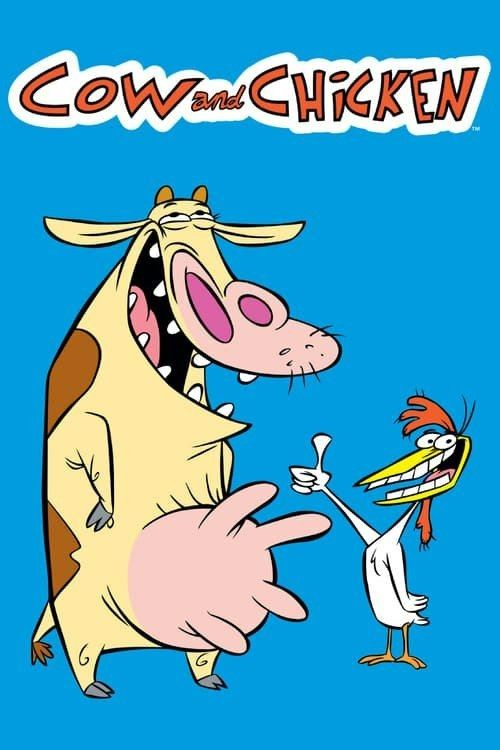

La Vaca y el Pollito es una serie estadounidense de dibujos animados de los años 90, creada por David Feiss, producida por Hanna-Barbera y emitida por Cartoon Network. La serie surgió en el año 1997 producto de un corto animado emitido en la serie What-A-Cartoon! (al igual que El laboratorio de Dexter) en el año 1995 titulado No Smoking. La serie también contó con los personajes de I Am Weasel (Soy Comadreja), los cuales formaban parte de un segmento recurrente emitido dentro de la misma serie, y que más tarde pasarían a tener su propia serie animada titulada I Am Weasel. La serie fue nominada a un premio Emmy en el año 1998. La Vaca y el Pollito está en el puesto nº13 de las mejores series de Cartoon Network.